Manual do Portal da Obra
O Portal da Obra é a tela enxuta do ERP, feita para o celular. Por ele a obra pede o que precisa ao escritório, acompanha o que pediu, colhe assinatura dos documentos que o DP mandou, devolve esses documentos pelo sistema e lança o diário do dia. É uma porta só, com um login só — o mesmo do ERP.
https://aplicacoes.bwsconstrucoes.com.br/erp/portal
Abre no navegador do celular (Chrome ou Safari) e não precisa instalar nada da loja. Depois de abrir, use o menu do navegador e escolha “Adicionar à tela inicial”: vira um ícone, como um aplicativo. No computador é o mesmo endereço.
As quatro áreas
1. Entrar: criar o seu acesso
O acesso ao portal é o mesmo acesso do ERP: e-mail e senha. Não é o CPF e o PIN do ponto.
Se você ainda não tem acesso
- Abra o endereço do portal. Na tela de entrada, toque em Criar o meu acesso.
- Digite o seu CPF e o telefone que está no seu cadastro na BWS.
- Chega um código de 6 números no WhatsApp daquele número. Digite o código.
- Informe o e-mail que você vai usar como login e conclua.
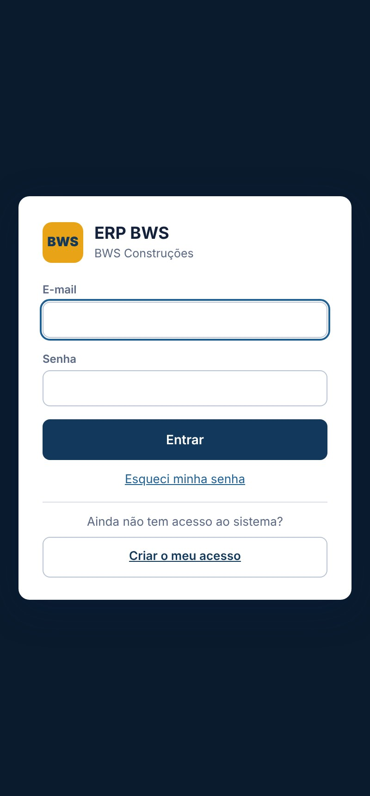
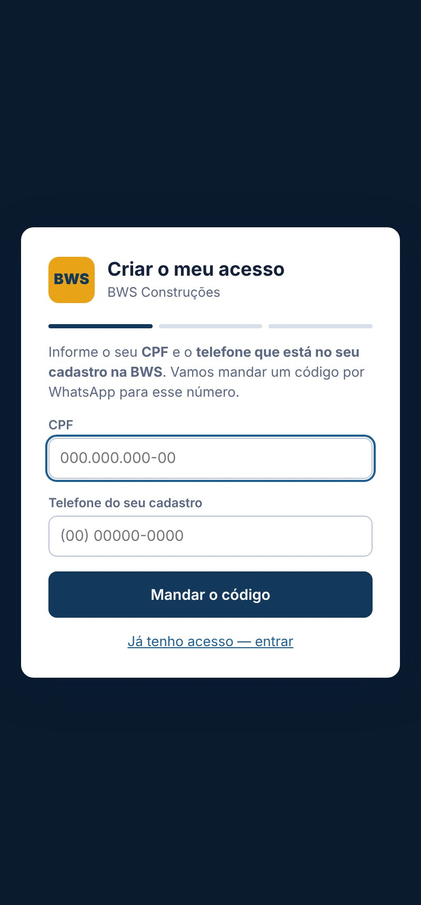
Se você já tem acesso
Entre com o e-mail e a senha. Quem é administrativo de obra cai direto no portal — é a tela dele, e o menu grande do ERP não aparece de propósito: seriam 18 telas que ele não usa.
Quem tem acesso maior (escritório, gestão, DP) vê no alto o link ERP completo → e vai e volta entre os dois.
2. A tela inicial, bloco por bloco
São quatro blocos, nesta ordem, e a ordem tem razão de ser: primeiro o que você veio fazer, depois o que tem prazo, depois o que é só aviso, por fim o histórico.
- Abrir uma solicitação — fica no alto, sempre. É o motivo de o portal existir.
- Pendências da obra — o que tem prazo e o DP está esperando: documento para o colaborador assinar e documento para devolver. Vem recolhido, com a quantidade à vista.
- Avisos da equipe — para você se programar: contrato de experiência terminando e férias chegando. Não é tarefa; por isso fica embaixo e recolhido.
- O que você já pediu — tudo o que você abriu, de todas as áreas, numa lista só, com a resposta do DP.
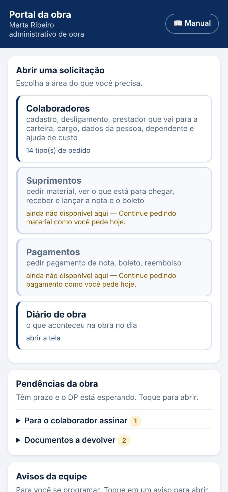
3. Área Colaboradores: os 14 pedidos
É tudo o que a obra pede ao DP sobre gente: entrar, sair, férias, afastamento, cargo, dados, dependente e ajuda de custo. O pedido vira uma solicitação numerada, cai na fila do DP e volta com resposta.
Como qualquer pedido funciona — três passos
- Escolha a área (Colaboradores) e depois o que você precisa. A lista vem agrupada por assunto: Admissão, Desligamento, Férias, Afastamento, Dados e benefícios, Outros.
- Preencha. Os campos mudam conforme o tipo — e conforme o vínculo da pessoa. Campo com * é obrigatório.
- Envie. A tela responde com o número do pedido (ex.: SDP‑000012) e ele já aparece em “O que você já pediu”.
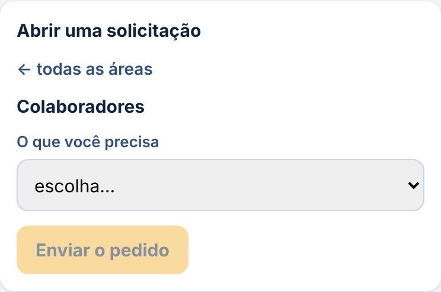
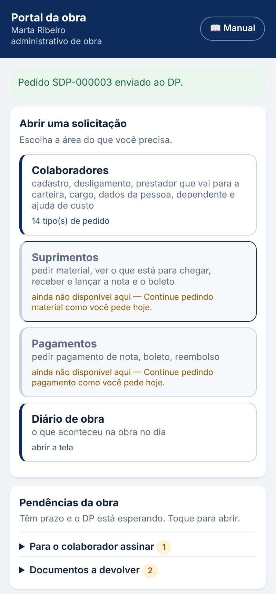
3.1 Admissão
Admissão de Colaborador serve para quem nunca trabalhou conosco e para quem já trabalhou — é um tipo só, e o sistema descobre sozinho pelo CPF.
- Se a pessoa já trabalhou aqui, procure pelo nome ou CPF no quadro “Já trabalhou conosco?”: o cadastro dela volta e você só completa o que falta.
- Fotografe os documentos primeiro — todos de uma vez: RG (frente e verso) ou CNH, CPF, comprovante de endereço, a CTPS se for carteira assinada, e o ASO se já tiver. O sistema lê e preenche os campos abaixo. Vale foto, PDF e foto de iPhone — ele converte sozinho.
- Confira o que ele leu e complete o resto: obra, empresa, cargo, salário, data de admissão.
Admissão de Prestador de Serviço é o caminho de quem já é prestador e passa a ter carteira. A busca só oferece prestadores — admitir em carteira quem já está em carteira não existe.
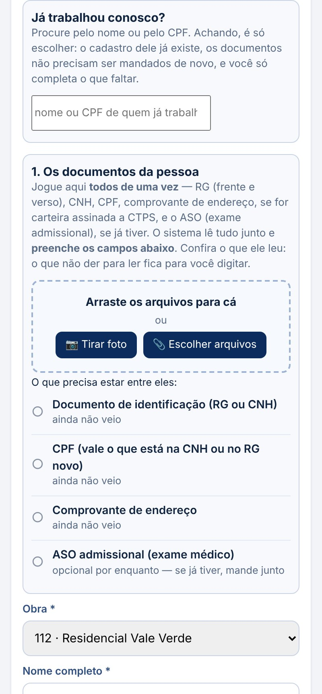
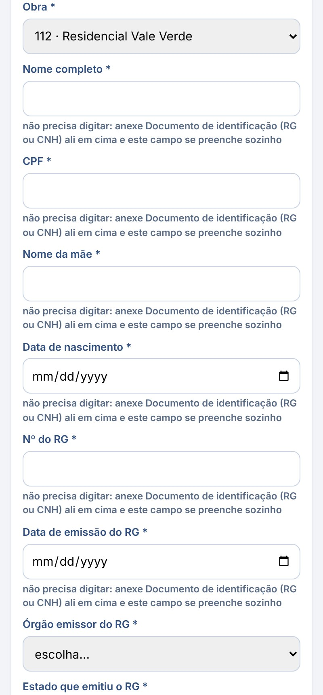
3.2 Desligamento
Desligamento de Colaborador fecha o vínculo e tira o acesso ao ponto. Escolha a pessoa pela busca: digite parte do nome ou do CPF e toque no resultado — o cargo e o vínculo aparecem ali, que é como você confere que acertou a pessoa.
- Carteira assinada: forma do desligamento, data do aviso prévio e se a pessoa continua como prestador.
- Prestador: só a data de saída.
Cancelar Solicitação de Desligamento é para quando a pessoa vai continuar: o DP desfaz a saída e avisa a contabilidade. Em “O que você já pediu”, o próprio desligamento tem o botão que já abre esse cancelamento com a pessoa escolhida.
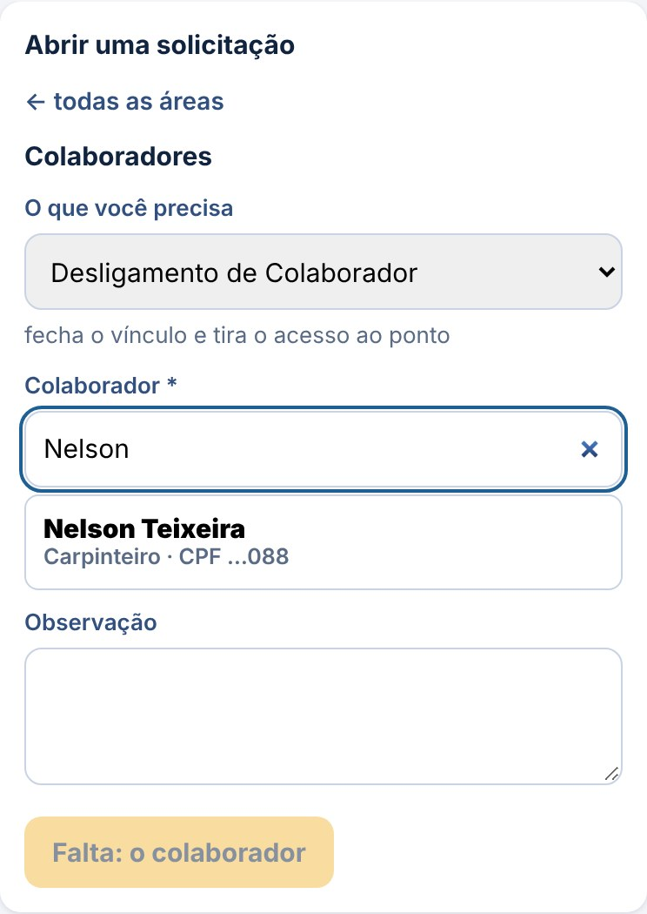
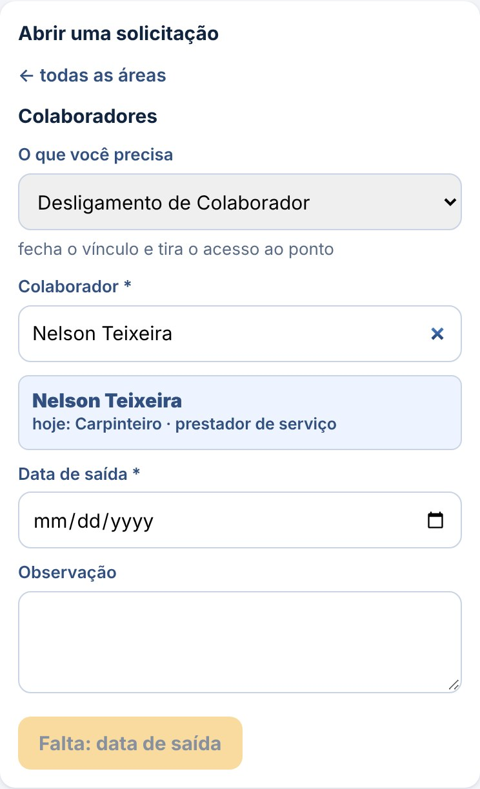
3.3 Férias
São três pedidos, e eles ficam juntos na lista:
- Solicitação de Férias — início, quantos dias, se vende 1/3 e se adianta o 13º.
- Alteração de Férias — mudar data ou dias de férias já marcadas.
- Cancelamento de Férias — desmarcar.
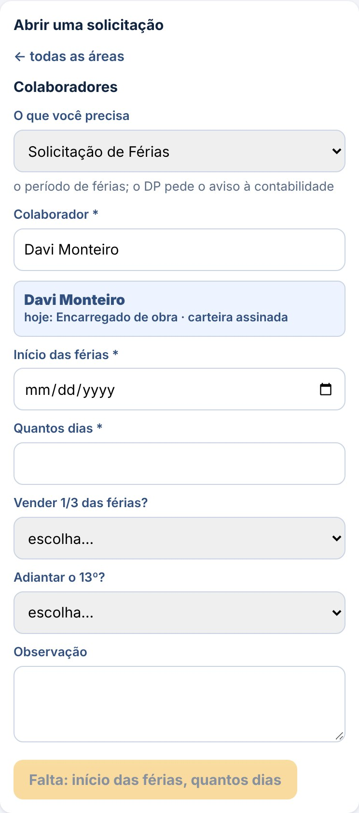
3.4 Afastamento
Comunicação de Afastamento: atestado acima de 15 dias, INSS, acidente de trabalho, maternidade. Informe a natureza, a data de início e a previsão de volta. Acidente não espera o ponto — comunique por aqui no mesmo dia.
Retorno de Afastamento: a pessoa voltou. O DP registra e comunica à contabilidade.
3.5 Dados e benefícios
- Solicitação de Alteração de Cargo — o cargo pleiteado, a data e a justificativa.
- Atualização de Dados Cadastrais — telefone, chave Pix, endereço, nome.
- Solicitação de Cadastro de Dependente — para salário‑família. Mande a certidão de nascimento (ou de casamento): o sistema reconhece, guarda como documento do dependente — não do titular — e preenche nome, nascimento e parentesco. Criança não precisa de RG. Dá para mandar vários de uma vez: cada documento vira um quadro numerado, e o sistema diz qual está incompleto.
- Solicitação de Ajuda de Custo — auxílio alimentação e auxílio transporte, inclusive o vale‑transporte (ele mora aqui dentro, nas categorias de transporte).
3.6 Outros
Solicitações Diversas é para o que não cabe nos tipos acima: você escreve o que precisa. Use com parcimônia — pedido com tipo próprio anda mais rápido, porque o DP já sabe o que fazer com ele.
4. Área Suprimentos
Pedir material, ver o que está para chegar, receber e lançar a nota e o boleto.
A tela existe e está pronta; o que não foi aberto ainda é a porta do portal para ela. É decisão da direção quando a obra passa a pedir material por aqui.
5. Área Financeiro
Pedir pagamento (nota, boleto, guia, conta de consumo, recibo), prestar contas do fundo fixo, cadastrar contrato de empreita e medir, cancelar um pedido e acompanhar tudo o que você pediu.
Quando abrir: escolha o que vai pedir e o formulário mostra só os campos daquele pedido. Pagamento em Pix pede a conta do credor; boleto pede a linha digitável. Jogue o documento no alto da tela e o sistema preenche o que conseguir ler — confira antes de enviar.
6. Área Diário de obra
Esta área não abre formulário de pedido: ela abre a tela do diário. Diário não é pedido — é registro do dia.
Toque em Diário de obra e o portal leva direto para a tela. Lá você:
- vê o quadro do mês, com um quadrado por dia — vermelho é dia sem diário;
- abre o dia e escreve o relato: o que aconteceu, as ocorrências, os equipamentos;
- anexa fotos, que já vão com data, hora e o lugar onde foram tiradas, e com legenda;
- o sistema junta sozinho o que ele já sabe do dia: quem bateu ponto e o clima.
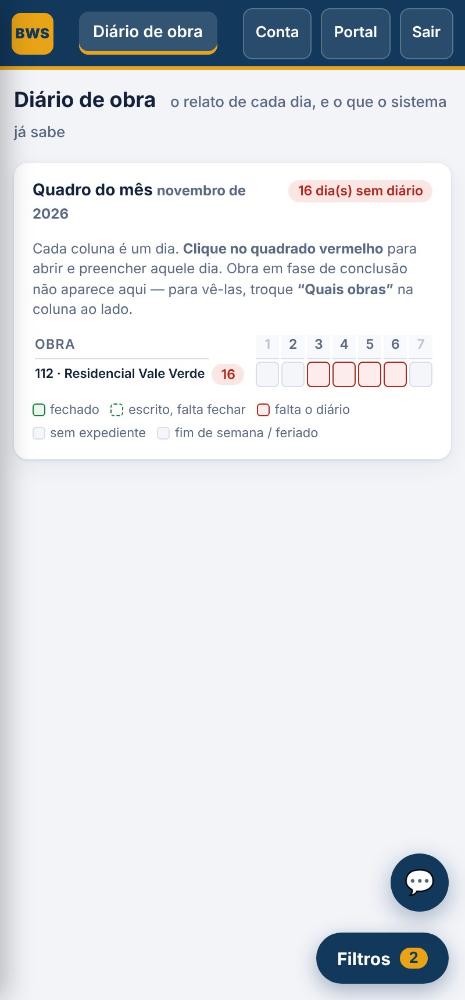
7. Pendências: assinar e devolver
É o que o DP mandou para a obra fazer. Tem prazo, e o sistema cobra. São duas coisas diferentes.
Para o colaborador assinar
O DP analisou, liberou, e agora a pessoa precisa assinar — um aviso prévio, por exemplo. O documento nasce no DP, nunca no pedido da obra: é isso que dá lisura ao processo.
- Toque no documento e mostre a tela à pessoa. Ela lê.
- Ela assina com o dedo no quadro e digita o PIN dela — o mesmo do aplicativo do ponto.
- Toque em Assinar. Pronto: o documento é gerado, guardado no cadastro dela e vai para o DP.
Quando não dá para assinar na tela, há os dois outros caminhos, logo abaixo:
- A pessoa não tem PIN — imprima, colha a assinatura no papel e envie a foto. O DP valida olhando.
- A pessoa se recusou a assinar — registre, com o nome de duas testemunhas. O DP valida.
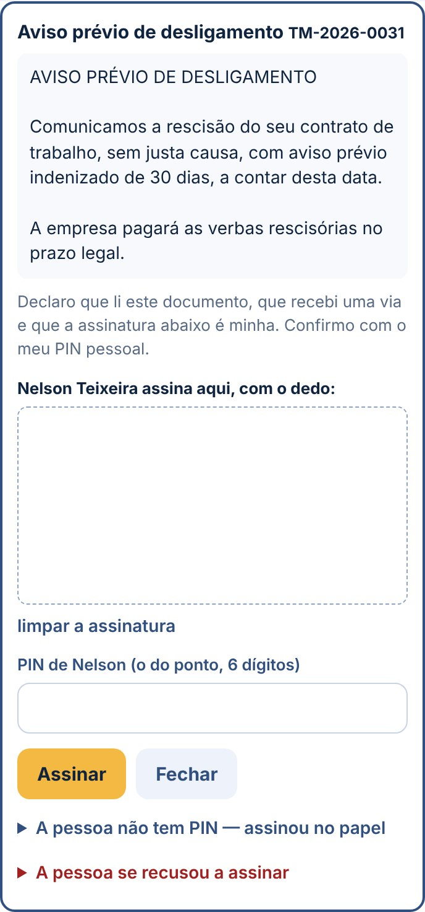
Documentos a devolver
O DP mandou um documento para a obra e espera ele de volta — a rescisão assinada, um ASO. Colha a assinatura e envie por aqui: escolha o arquivo ou tire a foto e toque em Enviar.
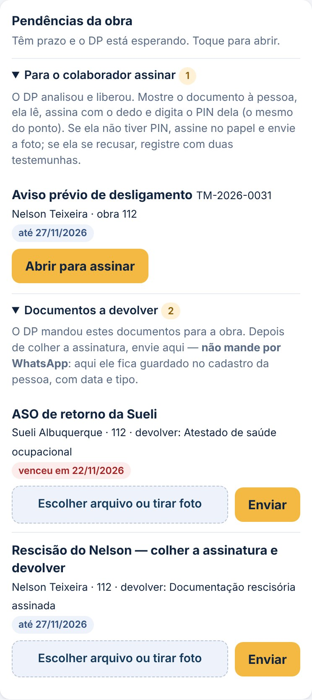
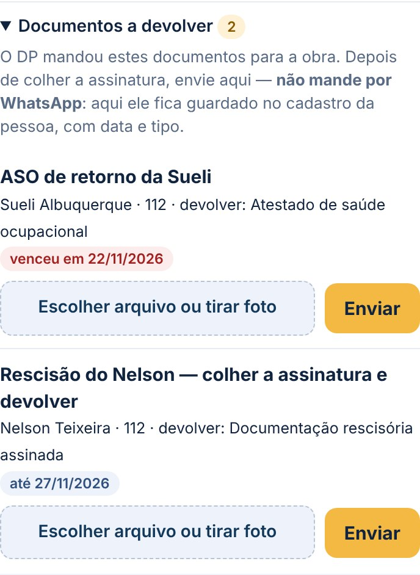
8. Avisos da equipe
Não é tarefa: é informação que chega antes de virar problema. Fica recolhido, mostrando só o assunto e a quantidade.
Contratos de experiência terminando
Aparece alguns dias antes do fim. Decida com o DP antes da data: efetivar (não precisa fazer nada) ou encerrar no prazo (peça o desligamento).
Férias da equipe
Quem sai de férias nos próximos dias e quem está de férias agora. Programe a obra sem essas pessoas e não conte falta no ponto delas.
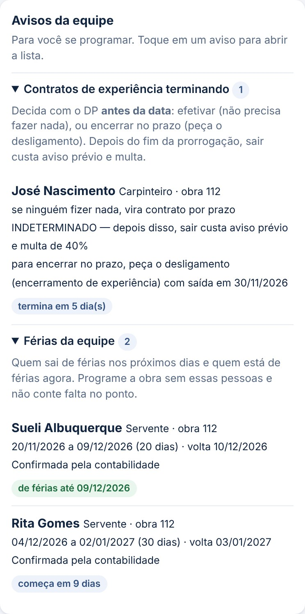
9. O que você já pediu
Uma lista só, de todas as áreas. Você quer saber o que está parado — não caçar área por área.
Cada linha traz o tipo, o número, a pessoa (nome, CPF, obra e cargo), a data e a situação. Quando o DP responde, a resposta aparece ali mesmo, marcada com DP:.
| Situação | O que quer dizer |
|---|---|
| Aberta | Chegou ao DP e ainda não foi pega. |
| Em análise | O DP está olhando. |
| Em andamento | Já está sendo executada — pode haver passo com a contabilidade. |
| Atendida | Terminou. A resposta do DP explica o que foi feito. |
| Recusada | Não vai ser feita. O motivo vem escrito. |
| Cancelada | Foi cancelada — por você ou pelo DP. |
Errou alguma coisa, ou mudou de ideia
Toque em Pedir para cancelar ou corrigir, escolha entre cancelar este pedido e corrigir alguma coisa, explique, e toque em Avisar o DP.
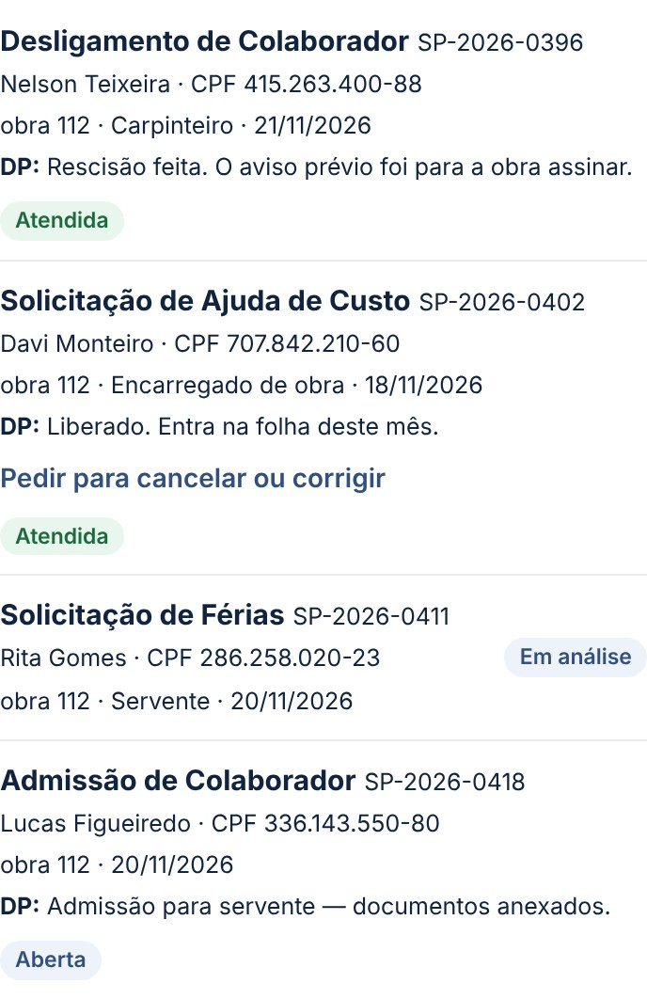
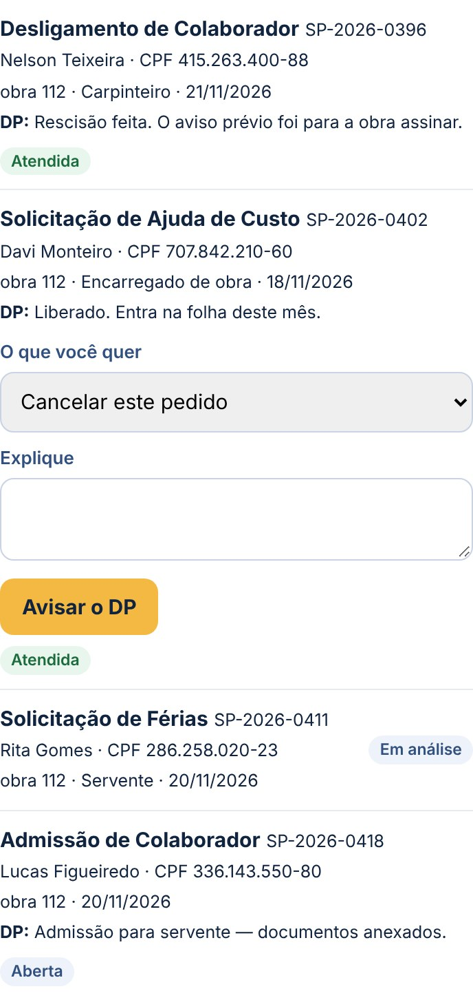
10. Quem vê o quê
O portal mostra a sua obra — não a empresa inteira. Quem decide isso é o seu cadastro, feito pelo DP.
- As pessoas que você encontra na busca são as das obras que você alcança.
- Os avisos, as pendências e os documentos a devolver são os da sua obra.
- “O que você já pediu” é o que você abriu — não o que a obra inteira abriu.
- A obra onde a pessoa bate ponto entra sozinha no seu alcance; as obras marcadas no seu cadastro somam a ela.
11. O que pode e o que não pode
Pode
- Abrir pedido por qualquer pessoa da sua obra.
- Abrir pedido por você mesmo, se você também é colaborador.
- Mandar vários documentos de uma vez num pedido (até 8 arquivos).
- Pedir correção ou cancelamento de um pedido que você abriu.
- Colher assinatura na tela, no papel, ou registrar a recusa.
- Usar no celular, no tablet e no computador — é o mesmo endereço.
Não pode
- Lançar desconto em folha — isso é do DP.
- Desfazer um pedido sozinho depois de enviado.
- Devolver documento por WhatsApp.
- Assinar no lugar da pessoa: o PIN é dela, e a assinatura também.
- Ver pessoas e obras fora do seu alcance.
- Pedir material e pagamento por aqui — ainda.
12. Mensagens na tela
O que o portal diz, o que significa e o que fazer.
| A tela diz | O que fazer |
|---|---|
| Entre no sistema para abrir ou acompanhar pedidos. | A sua sessão caiu. Entre de novo com e-mail e senha. |
| Seu acesso foi encerrado. Procure o DP. | O acesso foi desativado no cadastro. Só o DP reativa. |
| Escolha de quem é o pedido. | Falta escolher a pessoa na busca. Digite o nome e toque no resultado. |
| Escolha a obra — é ela que diz de onde vem a pessoa. | Selecione a obra na caixinha do formulário. |
| Falta a assinatura no quadro. | A pessoa precisa riscar o quadro com o dedo antes de confirmar. |
| O PIN tem 6 dígitos. | É o PIN do aplicativo do ponto, da própria pessoa. |
| Escolha o arquivo do documento. | Na devolução, escolha o arquivo ou tire a foto antes de enviar. |
| São no máximo 8 arquivos por pedido. | Mande os principais; o resto o DP pede depois, se precisar. |
| Muitos pedidos deste lugar. Tente mais tarde. | É a trava do primeiro acesso. Espere e tente de novo, ou peça ao DP. |
13. Dúvidas comuns
O portal é o mesmo aplicativo do ponto?
Não. São dois: o BWS Ponto (CPF e PIN) é para bater ponto e ver o seu mês; o Portal da Obra (e-mail e senha) é para pedir ao escritório. O PIN do ponto só volta a aparecer no portal num lugar: quando a pessoa assina um documento na tela.
Por que aparecem áreas que não abrem?
Para você saber que elas vão existir, e enquanto isso continuar pedindo como pede hoje. Esconder o que falta faria todo mundo achar que o sistema só serve para o DP.
Abri o pedido errado. E agora?
Em “O que você já pediu”, toque em Pedir para cancelar ou corrigir, escolha “Cancelar este pedido” e explique. O DP desfaz e, se a contabilidade já recebeu, comunica a ela.
A pessoa não tem PIN e precisa assinar hoje.
Use “A pessoa não tem PIN — assinou no papel”: imprima, colha a assinatura, fotografe e envie. O DP valida olhando a foto. Vale o mesmo.
A pessoa se recusou a assinar.
Registre pela opção “A pessoa se recusou a assinar”, com o nome de duas testemunhas. O prazo não para de correr só porque ela não assinou — registrar é o que protege a empresa e você.
Mandei a admissão sem um documento. Preciso abrir outro pedido?
Não. Use “Pedir para cancelar ou corrigir” no mesmo pedido e diga o que falta — o DP pede o documento por ali. Abrir um segundo pedido cria duas filas para a mesma pessoa.
Fiquei sem internet no meio do pedido.
O pedido só é gravado quando você toca em “Enviar o pedido” e a tela mostra o número. Sem o número, nada foi enviado — refaça quando a internet voltar.
Dá para usar no computador da obra?
Dá. É o mesmo endereço e a mesma tela — ela só fica mais larga. O diário, em especial, é bem mais confortável no computador.
Não acho uma pessoa da minha equipe na busca.
Ou ela não está na sua obra, ou ainda não tem cadastro. Se for da sua equipe, fale com o DP: o alcance do seu acesso precisa ser ajustado.
Quanto tempo o DP leva para responder?
Depende do tipo. O que tem prazo legal — desligamento, afastamento — anda primeiro. Você acompanha a situação em “O que você já pediu”, e a resposta aparece na própria linha.
Manual do Portal da Obra, versão de novembro de 2026. As telas são de um ambiente de teste: os nomes, os CPFs e a obra são inventados. Dúvida que este manual não respondeu: fale com o DP.